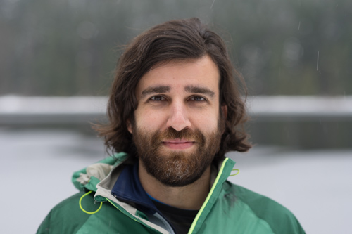

Hi there and thanks for visiting my website! My name is Adrian and I'm a photographer based in Portland, OR although born in northwestern Spain.
My photography is mainly landscapes and adventure, but I also take portraits, and architecture and street shots.
I offer my photos for free to whoever might want them. You can find some of them on my Unsplash account but if you want any you've seen on social media, just drop me an email and I'll send it to you.
I'm open to collaborations and can be hired for shoots, also send me an email.